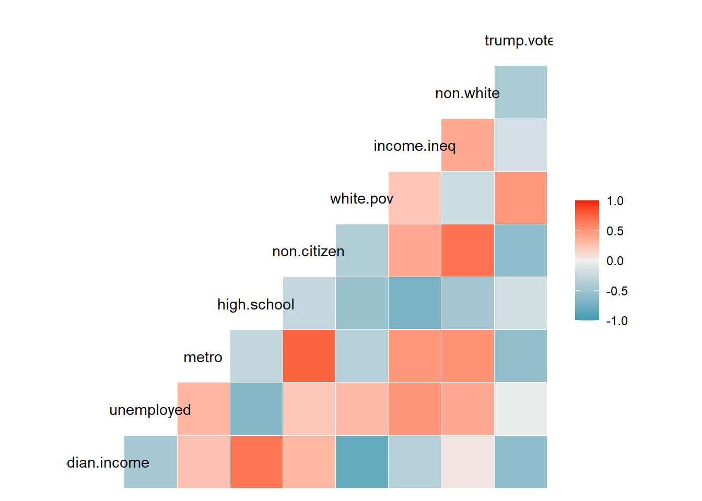

In this Module, we will take a look at two different, but related problems in statistical learning:
How do we filter out the most important predictors from a larger set of possibilities in a statistical model?
How do we pick the hyperparameter in a statistical model (eg. \(K\) in KNN) to best fit our data?
The first is called feature (or variable) selection while the latter is called hyperparameter tuning. We’ll focus on the former for the first couple section and start with an example that will in turn motivate the primary topic of this section: cross-validation.
Issues Involved in Feature Selection
In the practice problem from Module 2.1, you fit a full model to trump.vote using all other eight predictors from the data:
Call:
lm(formula = trump.vote ~ ., data = election2016[, 2:10])
Residuals:
Min 1Q Median 3Q Max
-0.206819 -0.032463 0.000321 0.037770 0.118240
Coefficients:
Estimate Std. Error t value Pr(>|t|)
(Intercept) 3.078e+00 7.745e-01 3.974 0.00028 ***
median.income -6.137e-06 2.243e-06 -2.737 0.00914 **
unemployed -1.250e+00 1.224e+00 -1.021 0.31326
metro -1.076e-01 9.232e-02 -1.166 0.25038
high.school -1.354e+00 6.181e-01 -2.190 0.03428 *
non.citizen -5.026e-01 5.766e-01 -0.872 0.38843
white.pov -1.173e+00 7.242e-01 -1.619 0.11305
income.ineq -1.620e+00 8.283e-01 -1.956 0.05727 .
non.white -1.813e-01 9.406e-02 -1.927 0.06091 .
---
Signif. codes: 0 '***' 0.001 '**' 0.01 '*' 0.05 '.' 0.1 ' ' 1
Residual standard error: 0.06511 on 41 degrees of freedom
Multiple R-squared: 0.651, Adjusted R-squared: 0.5829
F-statistic: 9.561 on 8 and 41 DF, p-value: 2.39e-07
Some of these are insignificant and potentially redundant. We saw this in Section 2.3 when we examined pairs of correlations between predictors. Just to throw in another fun tool, you can get a quick snapshot using the ggcorr function which gives a heatmap of correlations between pairs of variables:
library(GGally)ggcorr(election2016[, 2:10])

You can see, for example, that non.white and non.citizen are highly positively correlated while incom.ineq and high.school are negatively correlated.
We could fit a reduced model containing ONLY the significant predictors of median.income and high.school, but there are two problems with this approach. The first is that dropping all in significant predictors at once may drop too much from the model. We have previously seen that one variable may be significant but lose significance with the presence of additional variables due to colinearity. In fact, if we look at the model with the four predictors of lowest p-value:
Call:
lm(formula = trump.vote ~ median.income + high.school + income.ineq +
non.white, data = election2016)
Residuals:
Min 1Q Median 3Q Max
-0.177042 -0.048210 0.002878 0.044981 0.141588
Coefficients:
Estimate Std. Error t value Pr(>|t|)
(Intercept) 2.653e+00 7.454e-01 3.560 0.00089 ***
median.income -5.871e-06 1.714e-06 -3.425 0.00132 **
high.school -8.191e-01 6.079e-01 -1.347 0.18462
income.ineq -2.322e+00 7.865e-01 -2.952 0.00500 **
non.white -2.255e-01 7.994e-02 -2.821 0.00709 **
---
Signif. codes: 0 '***' 0.001 '**' 0.01 '*' 0.05 '.' 0.1 ' ' 1
Residual standard error: 0.06765 on 45 degrees of freedom
Multiple R-squared: 0.5865, Adjusted R-squared: 0.5498
F-statistic: 15.96 on 4 and 45 DF, p-value: 3.328e-08
We can see that incom.ineq and non.white were significant and high.school was not!
We can fix this issue by stepwise selection methods (discussed in the next notes), but the second issue is more serious. Any p-value based method for feature selection is deeply flawed as illustrated by the following example. Suppose we generate fake data of 100 observations with 10 predictors \(X_1,...,X_{10}\) and a numeric response \(Y\) which are all independent standard normal random variables.
No matter what I choose for the seed, I pretty consistently get at least one significant predictor even though all the variables were chosen independently! And the \(R^2\) value would have been worth considering in some disciplines (0.1–0.2 range) which should terrify you.
Looking for random relationships between a response and a large number of predictors is called data mining (or the more sinister term “data manipulation”) and it can lead to very misleading results. In fact, data mining has been the downfall of more than one researcher over the years1. I have read plenty of papers myself that look at a bunch of random correlations, find some that are significant by chance, and move on, feeling good about themselves for discovering new false patterns in the universe.
Now there is no inherent issue with p-values, but they are not ideal for feature selection in the world of “big data” where prediction is the key goal of statistical learning. They can lead to false associations and faulty extrapolations. On the other hand, if our goal is prediction and NOT inference, then maybe we don’t really care about including potentially “insignificant” variables if the predictions are similar. What we really care about in such situations is minimizing the
MSE (or equivalently, the RMSE), if \(Y\) is quantitative
The error rate (using the actual or balanced accuracy) if \(Y\) is qualitative
Furthermore, as we pointed out back in Module 1, we often want to minimize these quantities on testing sets that differ from the training sets we used to fit models in the first place. For example, suppose we use a 70-30 split in our fake data to compute a test RMSE:
NO! We have again fooled ourselves into thinking we have a clever model when we don’t and that is ignorant and dangerous. I claim that ANY GOOD procedure for feature selection should not show the above model as much better than the null since it isn’t!
The problem is that a single train/test split is itself subject to randomness: we got lucky (or unlucky) with how the data was divided. What we really want is a more reliable estimate of test error that doesn’t depend on one arbitrary split. That’s where cross-validation comes in.
Cross Validation: LOO vs K-Fold
Cross-Validation is a hyped up version of test set validation. Instead of just selecting ONE “hold out” testing set and fitting a model to ONE training set, it repeats this process multiple times and then looks at some kind of average error (or accuracy) across the results.
Leave-One-Out (LOO) cross-validation is the most intuitive form and works best when the sample size is relatively small. In LOO, we successively leave one observation out of the data, fit a model to the rest, and compute the prediction error for the left out loser. At the end, we average all the errors. It’s easy to code with a for loop. Here is an example using the fake data:
n=nrow(fake)yhat=numeric(n)for (j in1:n){ train=fake[-j,] # Leave out jth observations for training set train_lm=lm(y~.,data=train) # Fit model to remaining j-1 observations yhat[j]=predict(train_lm,newdata=fake[j,]) #Calculate prediction on observation j}RMSE_loo=sqrt(mean((fake$y-yhat)^2))cat("LOO Test RMSE:",RMSE_loo)
LOO Test RMSE: 1.033456
cat("\nNull RMSE:",RMSE_null)
Null RMSE: 0.9904183
Hmm, I like this already because remember, all the predictors in our fake model were bogus so the RMSE shouldn’t be better than the null model and now it isn’t!
The second most common form of cross-validation, \(K\)-fold, is used for larger datasets where LOO is too computationally intensive. In this method, we split the data into \(K\) equal groups (called folds) where \(K\) is a factor (or at least close to a factor) of the sample size \(n\). Common choices are \(K=5, 10\) or \(K=n\) (which gives LOO). Then we proceed to do training-testing set analysis on each of the folds. In other words, we start by using Fold 1 as the testing set and the other \(K-1\) folds as the training set. We fit the model and compute the total sum of squared errors for Fold 1. Then we repeat using Fold 2 as the testing set and so on. At the end, we calculate the RMSE using all the errors from the different folds.
This one is a little more complicated to code directly because you have to randomly split the data into K folds of roughly equal size2. We use the cut function for this purpose. Here is a demonstration with \(K=10\):
n =nrow(fake)K =10SSE =numeric(K)s =sample(n) # Shuffle indices so fold assignment are random fold_assignments =cut(1:n, breaks = K, labels =FALSE) # Assign indices to foldsfor (j in1:K){ fold = s[fold_assignments == j] # Indices for jth fold train = fake[-fold,] test = fake[fold,] train_lm =lm(y~.,data=train) yhat =predict(train_lm,newdata=test) SSE[j] =sum((test$y-yhat)^2)}RMSE_kfold =sqrt(sum(SSE)/n)cat("10-Fold Test RMSE:", RMSE_kfold)
10-Fold Test RMSE: 1.074088
This gave CLOSE to the same answer as the LOO, but only required 10 iterations as opposed to 100.
The moral of this story is that Cross-validation is not as susceptible to false positive model selection as either p-value approaches or one-time testing set validation. If the model is shitty, it will come out in the repetitions. Yay, now I can continue using it in peace.
Optional: Functions for Cross-Validation in lm
To be efficient (and have some fun), we can turn the routines above into functions that can be applied to any formula/dataframe pair. The routine for LOO is a pretty easy extension of our previous code:
looCV_lm=function(fla,df){# LOO cross-validation for linear models# Inputs: fla = formula, df = dataframe# Output: LOO RMSEyhat=numeric(nrow(df))for (j in1:nrow(df)){ train=df[-j,] fit=lm(fla,train) yhat[j]=predict(fit,newdata=df[j,])}y=df[[all.vars(fla)[1]]]rmse=sqrt(mean((y-yhat)^2))return(rmse)}
To use it, you pass a formula and a dataframe:
looCV_lm(as.formula('y~.'),fake)
[1] 1.033456
The extension to k-fold isn’t much more complicated:
kfoldCV_lm =function(fla, df, k) {# K-fold cross-validation for linear models# Inputs: fla = formula, df = dataframe, k = number of folds# Output: K-fold RMSE n =nrow(df)if (k > n) stop("k cannot be greater than the number of observations") s =sample(n) fold_assignments =cut(1:n, breaks = k, labels =FALSE) SSE =numeric(k) for (j in1:k) { fold = s[fold_assignments == j] train = df[-fold, ] test = df[fold, ] fit =lm(fla,train) yhat =predict(fit,test) SSE[j] =sum((test[[all.vars(fla)[1]]] - yhat)^2) } rmse=sqrt(sum(SSE) / n)return(rmse) }kfoldCV_lm(as.formula('y~.'),fake,20)
[1] 1.041508
We can apply the routines above to compare different models based on CV RMSE. For example, let’s return to our election2016 dataset and see how a full and reduced model compare based on LOOCV, with the null included as a baseline:
Notice that the both do better than baseline, but the reduced is slightly better than the full (even though the full is using more variables, it is over-fitting the data and that shows in the cross-validated RMSE). 10-Fold CV yields similar error rates:
We can apply both LOO and Kfold CV to classification models as well by replacing lm with the appropriate model (eg. KNN or logistic regression) and RMSE with the appropriate metric for model validation (eg. accuracy or balanced accuracy). For example, let’s suppose that instead of trump.vote as a number (fraction of people voting for Trump) we want to prediction election outcome as a binary (red vs blue). Here is a summary of the results
table(election2016$outcome)
Blue Red
20 30
We can do this by fitting a logistic regression model using the usual eight predictors although we first need to one-hot encode outcome (we’ll use Red = 1):
Call:
glm(formula = outcome_bin ~ ., family = "binomial", data = election2016[,
c(2:9, 12)])
Coefficients:
Estimate Std. Error z value Pr(>|z|)
(Intercept) 8.792e+01 4.267e+01 2.061 0.0393 *
median.income -3.452e-04 1.454e-04 -2.374 0.0176 *
unemployed -9.716e+01 6.619e+01 -1.468 0.1421
metro 3.234e+00 4.528e+00 0.714 0.4752
high.school -2.513e+01 2.970e+01 -0.846 0.3975
non.citizen -4.208e+01 3.180e+01 -1.323 0.1858
white.pov -3.327e+01 3.866e+01 -0.861 0.3894
income.ineq -8.751e+01 5.023e+01 -1.742 0.0815 .
non.white 1.698e+00 5.304e+00 0.320 0.7489
---
Signif. codes: 0 '***' 0.001 '**' 0.01 '*' 0.05 '.' 0.1 ' ' 1
(Dispersion parameter for binomial family taken to be 1)
Null deviance: 67.301 on 49 degrees of freedom
Residual deviance: 32.302 on 41 degrees of freedom
AIC: 50.302
Number of Fisher Scoring iterations: 6
We’ll now evaluate this model using LOOCV and replacing the RMSE calculation with one for model accuracy.
n=nrow(election2016)yhat=rep(0,n)for (j in1:n){ train=election2016[-j,] train_glm=outcome_glm=glm(outcome_bin~.,train[,c(2:9,12)],family="binomial") prob=predict(train_glm,election2016[j,],type="response") yhat[j]=ifelse(prob>0.5,1,0) #Calculate prediction on observation j}acc_loo=sum(election2016$outcome_bin==yhat)/ncat("LOO Test Accuracy:",acc_loo)
LOO Test Accuracy: 0.78
acc_null=sum(election2016$outcome_bin==1)/n # Guess most common classcat("\nNull Accuracy:",acc_null)
Null Accuracy: 0.6
That’s quite a bit better!
I’ll leave it to you to adapt the cross-validation code in the following practice exercise.
Practice
Modify the K-Fold procedure to compute the cross-validated accuracy for the full logistic regression model fit to the Framingham data in Module 3. Compare with the null model accuracy (always guess 0).
Bonus: Modify the procedure to compute cross-validated balanced accuracy instead. Hint: Instead of accumulating SSE across folds, think about how to accumulate the confusion matrix components.
Note: If time permits, you might also want to apply LOOCV to the Framingham data, but beware because the it will take longer to run with the larger sample size.
Footnotes
One of the most publicizied was the “food guy” Brian Wansink; read more here↩︎
They will be equal if \(K\) divides \(n\) but if not some folds may have an extra observation.↩︎